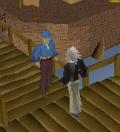
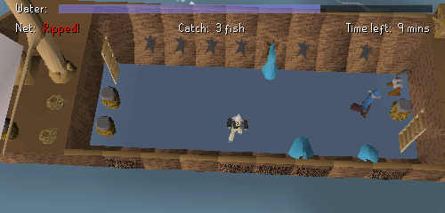
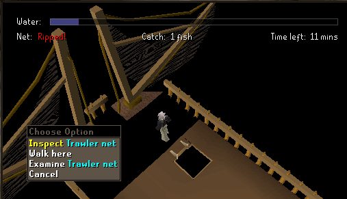

Fishing Trawler
Introduction
| Trawler fishing is a fishing styled mini-game, which can be fun either solo or with team mates. It can be found in Port Khazard, north of Yanille and south of Ardougne. |  |
| To start the mini-game, you should talk to Murphy at the docks. Please note that a Fishing level of 15 is required to do Trawler Fishing. |
In this mini-game you can catch any sea water fish up to your level, and it is the only way for high-level fisherman to catch Sea Turtles and Manta Rays.
What You'll Need
You should bring the following things when Trawler Fishing:50 to 60 Swamp Paste. This can be made by collecting Swamp Tar at a swamp like Lumbridge Swamp, using it with flour, and then cooking the uncooked Swamp Tar over a fire. It can also be bought from the General Store at Port Khazard. Swamp Paste is used to repair leaks in the boat.
One Bailing Bucket. This can be bought at the Port Khazard General Store. It is used to bail water out of the bottom of the boat.
6 to 10 Ropes. These can also be bought at the Port Khazard General Store, as well as a number of other places. These are used to fix the fishing net.
NOTE: Bring friends, alone it is almost impossible!
Trawler Fishing
To start the mini-game, speak to Murphy at the Port Khazard docks and agree to help him. He will make sure a number of times, and then allow you to get onto the boat.Once the first person gets on the boat, other team members will have one minute to get on as well.
Once you are aboard, you will need to start almost immediately. If the boat starts to leak, try and fill it immediately by clicking on it. Each time you fill a leak you will use one Swamp Paste. When there is a leak, the boat will begin to fill with water. You can tell how much water is in the boat by the bar at the top of your screen. Keep bailing to keep the bar down.

At the top of the screen, you will also be able to see the status of the net. If it is ripped you will need to go to the rear of the boat and climb up the ladder. Click on the net and you'll fix it, and one rope will disappear from your inventory.

To bail water out of the boat, click on the bailing bucket to fill it up, and then click again to get rid of the water. If the boat gets full of water, you will sink and end up in the water. To get out of the water, click on a floating barrel and you will end up at Port Sarim, and the boat will again be waiting for you at Port Khazard.

Once ten minutes is up, the mini-game is over. When you get back, inspect the net. Here you can choose what you would like to keep, and leave the rest.
This Mini-Game guide was written by Downstrike. Thanks to kngkyle for corrections.
This Mini-Game guide was entered into the RuneHQ.com database on Sun, Oct 19, 2003, at 12:00:00 AM by MrStormy and was last updated on Sun, Sep 11, 2005, at 10:51:15 AM by Fireball0236.